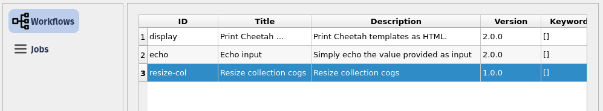
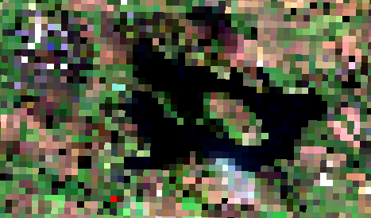

# If needed you can install a package in the current AppHub Jupyter environment using pip
# For instance, we will need at least the following libraries
import sys
!{sys.executable} -m pip install --upgrade pyeodh pandas matplotlib numpy pillow foliumPathfinder Phase Workshop: Processing Data
Description & purpose: This Notebook is designed to showcase the functionality of the Earth Observation Data Hub (EODH) as the project approaches the end of the Pathfinder Phase. It provides a snapshot of the Hub, the pyeodh API client and the various datasets as of February 2025.
Author(s): Alastair Graham, Dusan Figala
Date created: 2025-02-18
Date last modified: 2025-02-21
Licence: This notebook is licensed under Creative Commons Attribution-ShareAlike 4.0 International. The code is released using the BSD-2-Clause license.
Copyright (c) , All rights reserved.
Redistribution and use in source and binary forms, with or without modification, are permitted provided that the following conditions are met:
Redistributions of source code must retain the above copyright notice, this list of conditions and the following disclaimer. Redistributions in binary form must reproduce the above copyright notice, this list of conditions and the following disclaimer in the documentation and/or other materials provided with the distribution. THIS SOFTWARE IS PROVIDED BY THE COPYRIGHT HOLDERS AND CONTRIBUTORS “AS IS” AND ANY EXPRESS OR IMPLIED WARRANTIES, INCLUDING, BUT NOT LIMITED TO, THE IMPLIED WARRANTIES OF MERCHANTABILITY AND FITNESS FOR A PARTICULAR PURPOSE ARE DISCLAIMED. IN NO EVENT SHALL THE COPYRIGHT HOLDER OR CONTRIBUTORS BE LIABLE FOR ANY DIRECT, INDIRECT, INCIDENTAL, SPECIAL, EXEMPLARY, OR CONSEQUENTIAL DAMAGES (INCLUDING, BUT NOT LIMITED TO, PROCUREMENT OF SUBSTITUTE GOODS OR SERVICES; LOSS OF USE, DATA, OR PROFITS; OR BUSINESS INTERRUPTION) HOWEVER CAUSED AND ON ANY THEORY OF LIABILITY, WHETHER IN CONTRACT, STRICT LIABILITY, OR TORT (INCLUDING NEGLIGENCE OR OTHERWISE) ARISING IN ANY WAY OUT OF THE USE OF THIS SOFTWARE, EVEN IF ADVISED OF THE POSSIBILITY OF SUCH DAMAGE.
Presentation set up
The following cell only needs to be run on the EODH AppHub. If you have a local Python environment running, please install the required packages as you would normally. If running locally, it’s easiest to install all dependencies using uv (https://docs.astral.sh/uv/getting-started/installation/) by running uv sync in the root directory of the repository.
EODH and EOAP
The EODH compute architecture is built around a collection of OGC standards which when brought together are known as EO Application Packages (EOAP). These are complex constructions of code and data, and at their core is the concept of a Common Workflow Language (CWL) workflow. To run CWL workflows you need a CWL runner, and the EODH Workflow Runner provides that. The EOAPs require a workflow description in CWL, a Docker container, bespoke scripts and links to the data. In the case of EODH, the data inputs and outputs are to be provided as STAC catalogues. Oxidian, as part of our work developing integrations for the Hub, have created a generator tool eoap-gen that abstracts away much of the complexity (check out the training materials repository and website for more details).
Oxidian have also developed a QGIS plugin to allow desktop users to discover, parameterise and execute workflows on the Hub. We will look at that more at the bottom of this document.
# Imports
import pyeodh
import os
from requests import HTTPErrorFirst the user needs to connect to the Workflow Runner. You will need your workspace name and API key (as obtained earlier in the exercises).
Here, those details have been saved in secrets.txt which contains the two lines below where WORKSPACE and API_KEY are specific to the user:
WS="WORKSPACE"
PSWD="API_KEY"You can either create a secrets.txt file in the same folder as this Notebook and run the next code cell, OR you can manually copy and paste your details details into the next-but-one code cell and run that. Make sure you save your Notebook after making any edits. Do not share your credentials.
# Make sure secrets.txt exists in the same folder as this Notebook, and is correctly formatted
# If you have the correct permissions you can join different platforms by changing base_url
with open("secrets.txt", "r") as file:
for line in file:
parts = line.strip().split("=")
if len(parts) == 2:
key, value = parts
if key.strip() == "WS":
workspace = value.strip('"')
elif key.strip() == "PSWD":
token = value.strip('"')
clientwfr = pyeodh.Client(
base_url="https://eodatahub.org.uk", username=workspace, token=token
)
wfr = clientwfr.get_ades()# IGNORE if you ran the previous cell successfully
username = "Replace with your username"
token = "Replace with your API token"
clientwfr = pyeodh.Client(
base_url="https://eodatahub.org.uk", username=username, token=token
)
wfr = clientwfr.get_ades()The next cell demonstrates a simple CWL workflow. Do not change the code in this cell or your workflow will return errors.
The workflow takes in an array of file names. These would be URLs to online resources, so you could imagine obtaining them via a search of a STAC catalogue. It then starts gdal in a Docker container and passes the URLs into the container. gdal_translate is then used to resize the resolution of the image pixels to 5% of their original. The outputs are passed to another Docker container that creates a STAC compatible output and stores it in an AWS S3 bucket attached to your workspace.
As you can see, in the case of simple workflows, it is likely easier to use the base commands. However, if you want to generate STAC outputs, or run any workflow where it acts as a service, or need connections between platforms, then there are situations where EOAPs can be beneficial.
cwl_yaml = r"""$graph:
- class: CommandLineTool
id: 'resize_make_stac'
inputs:
- id: 'files'
doc: FILES
type:
type: array
items: File
inputBinding: {}
requirements:
- class: DockerRequirement
dockerPull: ghcr.io/eo-datahub/user-workflows/resize_make_stac:main
- class: InlineJavascriptRequirement
doc: "None\n"
baseCommand:
- python
- /app/app.py
outputs:
- id: 'stac_catalog'
outputBinding:
glob: .
type: Directory
- class: CommandLineTool
inputs:
- id: 'url'
inputBinding:
position: 1
prefix: /vsicurl/
separate: false
type: string
- id: 'fname'
inputBinding:
position: 2
valueFrom: $(inputs.url.split('/').pop() + "_resized.tif")
type: string
- id: 'outsize_x'
inputBinding:
position: 4
prefix: -outsize
separate: true
type: string
- id: 'outsize_y'
inputBinding:
position: 5
type: string
outputs:
- type: File
outputBinding:
glob: '*.tif'
id: 'resized'
requirements:
- class: DockerRequirement
dockerPull: ghcr.io/osgeo/gdal:ubuntu-small-latest
- class: InlineJavascriptRequirement
baseCommand: gdal_translate
id: 'resize_process'
- class: Workflow
id: 'resize-urls'
inputs:
- id: 'urls'
label: urls
doc: urls
type:
type: array
items: string
- id: 'outsize_x'
label: outsize_x
doc: outsize_x
default: 5%
type: string
- id: 'outsize_y'
label: outsize_y
doc: outsize_y
default: 5%
type: string
outputs:
- id: 'stac_output'
outputSource:
- 'resize_make_stac/stac_catalog'
type: Directory
requirements:
- class: ScatterFeatureRequirement
- class: StepInputExpressionRequirement
- class: InlineJavascriptRequirement
label: Resize urls
doc: Resize urls
steps:
- id: 'resize_process'
in:
- id: 'outsize_x'
source: 'outsize_x'
- id: 'outsize_y'
source: 'outsize_y'
- id: 'url'
source: 'urls'
- id: 'fname'
valueFrom: $(inputs.url.split('/').pop() + "_resized.tif")
out:
- id: 'resized'
run: '#resize_process'
scatter:
- 'url'
scatterMethod: dotproduct
- id: 'resize_make_stac'
in:
- id: 'files'
source: 'resize_process/resized'
out:
- id: 'stac_catalog'
run: '#resize_make_stac'
cwlVersion: v1.0
"""If you try to deploy a workflow that already exists (i.e. with the same name) in the EODH, you will get an error. It is therefore good practice to run a check and delete any process with the same name - assuming you are confident that you want to overwrite it. Otherwise, consider renaming your workflow.
try:
wfr.get_process("resize-urls").delete()
except Exception:
print("Process not found, no need to undeploy.")# Deploy the CWL workflow code to the workflow runner
process = wfr.deploy_process(cwl_yaml=cwl_yaml)If you want to know what workflows you have access to in your workspace on the Hub, the following code will create a print out.
# List the workflows available in the user workspace
for p in wfr.get_processes():
print(p.id)echo
resize-urls
convert-urlThe following code executes the workflow for the two dataset URLs listed
Note: If you get a 409 error this usually means the process already exists and you need to handle the existing process by either calling process.delete() first then deploying again, or calling process.update()
myjob = wfr.get_process("resize-urls").execute(
{
"urls": [
"https://dap.ceda.ac.uk/neodc/sentinel_ard/data/sentinel_2/2023/11/20/S2A_20231120_latn501lonw0036_T30UVA_ORB037_20231120132420_utm30n_osgb_vmsk_sharp_rad_srefdem_stdsref.tif",
"https://dap.ceda.ac.uk/neodc/sentinel_ard/data/sentinel_2/2023/11/20/S2A_20231120_latn519lonw0037_T30UVC_ORB037_20231120132420_utm30n_osgb_vmsk_sharp_rad_srefdem_stdsref.tif",
],
"outsize_x": "5%",
"outsize_y": "5%",
}
)
print(myjob.status)runningWe can check the status of the job using attributes on the job object:
myjob.refresh()
print("Status: ", myjob.status)
print("Message: ", myjob.message)
print(myjob.self_href)Status: successful
Message: ZOO-Kernel successfully run your service!
https://eodatahub.org.uk/api/catalogue/stac/catalogs/user/catalogs/myws/jobs/a0f09cce-a5e3-11f0-a7b7-2e0a764e87ebIf you follow the URL output from the previous cell you will see something similar to the following. The two immediately helpful bits of information are the jobID and status (hopefully it’s successful!). Ypou may need to refresh the web page if the workflow takes a while to cmplete. You will need to be logged in to your EODH account to be able to view this file and any links from it as these are tied to your workspace. as you can hopefully see from the cell below, there are logs to each of the stages of the workflow, all of which are accessible.
{
"id": "8be7184e-4148-11f0-b446-d2c52c451fa3",
"jobID": "8be7184e-4148-11f0-b446-d2c52c451fa3",
"type": "process",
"processID": "resize-urls",
"created": "2025-06-04T13:33:49.254Z",
"started": "2025-06-04T13:33:49.254Z",
"finished": "2025-06-04T13:35:45.932Z",
"updated": "2025-06-04T13:35:45.651Z",
"status": "successful",
"message": "ZOO-Kernel successfully run your service!",
"links": [
{
"title": "Status location",
"rel": "monitor",
"type": "application/json",
"href": "https://eodatahub.org.uk/api/catalogue/stac/catalogs/user/catalogs/myws/jobs/8be7184e-4148-11f0-b446-d2c52c451fa3",
},
{
"title": "Result location",
"rel": "http://www.opengis.net/def/rel/ogc/1.0/results",
"type": "application/json",
"href": "https://eodatahub.org.uk/api/catalogue/stac/catalogs/user/catalogs/myws/jobs/8be7184e-4148-11f0-b446-d2c52c451fa3/results",
},
{
"href": "https://eodatahub.org.uk/api/catalogue/stac/catalogs/user/catalogs/myws/jobs/8be7184e-4148-11f0-b446-d2c52c451fa3/resize_process.log",
"title": "Tool log resize_process.log",
"rel": "related",
"type": "text/plain",
},
{
"href": "https://eodatahub.org.uk/api/catalogue/stac/catalogs/user/catalogs/myws/jobs/8be7184e-4148-11f0-b446-d2c52c451fa3/resize_process_2.log",
"title": "Tool log resize_process_2.log",
"rel": "related",
"type": "text/plain",
},
{
"href": "https://eodatahub.org.uk/api/catalogue/stac/catalogs/user/catalogs/myws/jobs/8be7184e-4148-11f0-b446-d2c52c451fa3/resize_make_stac.log",
"title": "Tool log resize_make_stac.log",
"rel": "related",
"type": "text/plain",
},
{
"href": "https://eodatahub.org.uk/api/catalogue/stac/catalogs/user/catalogs/myws/jobs/8be7184e-4148-11f0-b446-d2c52c451fa3/node_stage_out.log",
"title": "Tool log node_stage_out.log",
"rel": "related",
"type": "text/plain",
},
],
}Following the final URL (node_stage_out.log in the case above) should take you to a detailed log of the full process. (For purposes of this notebook, an internal request method of the client is used to fetch the log.) A selection of that log is shown in the cell below. From here it is possible to access the resized output files (ending in _resized.tif) and download them. They are also catalogued in STAC so you can use pyeodh to access them, or you can use the Catalogue user interface and look under User Datasets for a catalogue with the same Job_ID and find links to the outputs that way.
Note it might take a while for job logs to be available after the job has finished. If you get an error in the cell below, try again a few seconds later until you get a response.
myjob.refresh()
stage_out_url = next(
link.href for link in myjob.links if link.title == "Tool log node_stage_out.log"
)
resp = clientwfr._request_raw("Get", stage_out_url)
print(resp.text)2025-10-10T14:17:23.205638Z - node-stage-out-pod-gpnudysw - Running stageout with /var/lib/cwl/stg617bf3a9-c559-4bb5-8081-ca441ec84152/pdf7dbm0 workspaces-eodhp processing-results/resize-urls a0f09cce-a5e3-11f0-a7b7-2e0a764e87eb resize-urls https://eodhp/catalogs/user/catalogs/myws/jobs/a0f09cce-a5e3-11f0-a7b7-2e0a764e87eb
2025-10-10T14:17:23.205758Z - node-stage-out-pod-gpnudysw - No Collections found, generating new collection
Upload asset /var/lib/cwl/stg617bf3a9-c559-4bb5-8081-ca441ec84152/pdf7dbm0/S2A_20231120_latn501lonw0036_T30UVA_ORB037_20231120132420_utm30n_osgb_vmsk_sharp_rad_srefdem_stdsref.tif_resized/S2A_20231120_latn501lonw0036_T30UVA_ORB037_20231120132420_utm30n_osgb_vmsk_sharp_rad_srefdem_stdsref.tif_resized.tif to workspaces-eodhp at myws/processing-results/resize-urls/catalog/col_a0f09cce-a5e3-11f0-a7b7-2e0a764e87eb/S2A_20231120_latn501lonw0036_T30UVA_ORB037_20231120132420_utm30n_osgb_vmsk_sharp_rad_srefdem_stdsref.tif_resized/S2A_20231120_latn501lonw0036_T30UVA_ORB037_20231120132420_utm30n_osgb_vmsk_sharp_rad_srefdem_stdsref.tif_resized.tif
2025-10-10T14:17:23.391372Z - node-stage-out-pod-gpnudysw - Replacing asset href with https://myws.eodatahub-workspaces.org.uk/files/workspaces-eodhp/processing-results/resize-urls/catalog/col_a0f09cce-a5e3-11f0-a7b7-2e0a764e87eb/S2A_20231120_latn501lonw0036_T30UVA_ORB037_20231120132420_utm30n_osgb_vmsk_sharp_rad_srefdem_stdsref.tif_resized/S2A_20231120_latn501lonw0036_T30UVA_ORB037_20231120132420_utm30n_osgb_vmsk_sharp_rad_srefdem_stdsref.tif_resized.tif
2025-10-10T14:17:23.391543Z - node-stage-out-pod-gpnudysw - Upload asset /var/lib/cwl/stg617bf3a9-c559-4bb5-8081-ca441ec84152/pdf7dbm0/S2A_20231120_latn519lonw0037_T30UVC_ORB037_20231120132420_utm30n_osgb_vmsk_sharp_rad_srefdem_stdsref.tif_resized/S2A_20231120_latn519lonw0037_T30UVC_ORB037_20231120132420_utm30n_osgb_vmsk_sharp_rad_srefdem_stdsref.tif_resized.tif to workspaces-eodhp at myws/processing-results/resize-urls/catalog/col_a0f09cce-a5e3-11f0-a7b7-2e0a764e87eb/S2A_20231120_latn519lonw0037_T30UVC_ORB037_20231120132420_utm30n_osgb_vmsk_sharp_rad_srefdem_stdsref.tif_resized/S2A_20231120_latn519lonw0037_T30UVC_ORB037_20231120132420_utm30n_osgb_vmsk_sharp_rad_srefdem_stdsref.tif_resized.tif
2025-10-10T14:17:23.524117Z - node-stage-out-pod-gpnudysw - Replacing asset href with https://myws.eodatahub-workspaces.org.uk/files/workspaces-eodhp/processing-results/resize-urls/catalog/col_a0f09cce-a5e3-11f0-a7b7-2e0a764e87eb/S2A_20231120_latn519lonw0037_T30UVC_ORB037_20231120132420_utm30n_osgb_vmsk_sharp_rad_srefdem_stdsref.tif_resized/S2A_20231120_latn519lonw0037_T30UVC_ORB037_20231120132420_utm30n_osgb_vmsk_sharp_rad_srefdem_stdsref.tif_resized.tif
2025-10-10T14:17:23.524202Z - node-stage-out-pod-gpnudysw - Upload collection.json to https://myws.eodatahub-workspaces.org.uk/files/workspaces-eodhp/processing-results/resize-urls/catalog/col_a0f09cce-a5e3-11f0-a7b7-2e0a764e87eb.json
2025-10-10T14:17:23.577092Z - node-stage-out-pod-gpnudysw - Writing to https://myws.eodatahub-workspaces.org.uk/files/workspaces-eodhp/processing-results/resize-urls/catalog/col_a0f09cce-a5e3-11f0-a7b7-2e0a764e87eb.json
Uploading to myws/processing-results/resize-urls/catalog/col_a0f09cce-a5e3-11f0-a7b7-2e0a764e87eb.json at workspaces-eodhp
2025-10-10T14:17:23.737749Z - node-stage-out-pod-gpnudysw - Upload S2A_20231120_latn501lonw0036_T30UVA_ORB037_20231120132420_utm30n_osgb_vmsk_sharp_rad_srefdem_stdsref.tif_resized to s3://workspaces-eodhp/myws/processing-results/resize-urls/catalog/col_a0f09cce-a5e3-11f0-a7b7-2e0a764e87eb/S2A_20231120_latn501lonw0036_T30UVA_ORB037_20231120132420_utm30n_osgb_vmsk_sharp_rad_srefdem_stdsref.tif_resized.json
2025-10-10T14:17:23.849852Z - node-stage-out-pod-gpnudysw - Writing to s3://workspaces-eodhp/myws/processing-results/resize-urls/catalog/col_a0f09cce-a5e3-11f0-a7b7-2e0a764e87eb/S2A_20231120_latn501lonw0036_T30UVA_ORB037_20231120132420_utm30n_osgb_vmsk_sharp_rad_srefdem_stdsref.tif_resized.json
Uploading to myws/processing-results/resize-urls/catalog/col_a0f09cce-a5e3-11f0-a7b7-2e0a764e87eb/S2A_20231120_latn501lonw0036_T30UVA_ORB037_20231120132420_utm30n_osgb_vmsk_sharp_rad_srefdem_stdsref.tif_resized.json at workspaces-eodhp
2025-10-10T14:17:24.012983Z - node-stage-out-pod-gpnudysw - Upload S2A_20231120_latn519lonw0037_T30UVC_ORB037_20231120132420_utm30n_osgb_vmsk_sharp_rad_srefdem_stdsref.tif_resized to s3://workspaces-eodhp/myws/processing-results/resize-urls/catalog/col_a0f09cce-a5e3-11f0-a7b7-2e0a764e87eb/S2A_20231120_latn519lonw0037_T30UVC_ORB037_20231120132420_utm30n_osgb_vmsk_sharp_rad_srefdem_stdsref.tif_resized.json
2025-10-10T14:17:24.062467Z - node-stage-out-pod-gpnudysw - Writing to s3://workspaces-eodhp/myws/processing-results/resize-urls/catalog/col_a0f09cce-a5e3-11f0-a7b7-2e0a764e87eb/S2A_20231120_latn519lonw0037_T30UVC_ORB037_20231120132420_utm30n_osgb_vmsk_sharp_rad_srefdem_stdsref.tif_resized.json
Uploading to myws/processing-results/resize-urls/catalog/col_a0f09cce-a5e3-11f0-a7b7-2e0a764e87eb/S2A_20231120_latn519lonw0037_T30UVC_ORB037_20231120132420_utm30n_osgb_vmsk_sharp_rad_srefdem_stdsref.tif_resized.json at workspaces-eodhp
2025-10-10T14:17:24.212883Z - node-stage-out-pod-gpnudysw - Generated new collection and uploaded to S3
Upload catalog.json to https://myws.eodatahub-workspaces.org.uk/files/workspaces-eodhp/processing-results/resize-urls/catalog.json
2025-10-10T14:17:24.370179Z - node-stage-out-pod-gpnudysw - Writing to https://myws.eodatahub-workspaces.org.uk/files/workspaces-eodhp/processing-results/resize-urls/catalog.json
2025-10-10T14:17:24.370250Z - node-stage-out-pod-gpnudysw - Uploading to myws/processing-results/resize-urls/catalog.json at workspaces-eodhp
2025-10-10T14:17:24.500697Z - node-stage-out-pod-gpnudysw - Upload new Catalog resize-urls to https://myws.eodatahub-workspaces.org.uk/files/workspaces-eodhp/processing-results/resize-urls.json
2025-10-10T14:17:24.548513Z - node-stage-out-pod-gpnudysw - Writing to https://myws.eodatahub-workspaces.org.uk/files/workspaces-eodhp/processing-results/resize-urls.json
2025-10-10T14:17:24.548578Z - node-stage-out-pod-gpnudysw - Uploading to myws/processing-results/resize-urls.json at workspaces-eodhp
2025-10-10T14:17:24.684389Z - node-stage-out-pod-gpnudysw - STAC outputs found, sending to ingester
Now harvesting files
Harvesting file myws/processing-results/resize-urls/catalog/col_a0f09cce-a5e3-11f0-a7b7-2e0a764e87eb/S2A_20231120_latn501lonw0036_T30UVA_ORB037_20231120132420_utm30n_osgb_vmsk_sharp_rad_srefdem_stdsref.tif_resized.json
2025-10-10T14:17:24.707256Z - node-stage-out-pod-gpnudysw - Uploading file to workflow-harvester/a0f09cce-a5e3-11f0-a7b7-2e0a764e87eb/myws/catalogs/processing-results/catalogs/resize-urls/catalogs/catalog/collections/col_a0f09cce-a5e3-11f0-a7b7-2e0a764e87eb/items/S2A_20231120_latn501lonw0036_T30UVA_ORB037_20231120132420_utm30n_osgb_vmsk_sharp_rad_srefdem_stdsref.tif_resized.json
2025-10-10T14:17:24.739076Z - node-stage-out-pod-gpnudysw - File myws/processing-results/resize-urls/catalog/col_a0f09cce-a5e3-11f0-a7b7-2e0a764e87eb/S2A_20231120_latn501lonw0036_T30UVA_ORB037_20231120132420_utm30n_osgb_vmsk_sharp_rad_srefdem_stdsref.tif_resized.json harvested successfully
2025-10-10T14:17:24.739175Z - node-stage-out-pod-gpnudysw - Harvesting file myws/processing-results/resize-urls/catalog/col_a0f09cce-a5e3-11f0-a7b7-2e0a764e87eb/S2A_20231120_latn519lonw0037_T30UVC_ORB037_20231120132420_utm30n_osgb_vmsk_sharp_rad_srefdem_stdsref.tif_resized.json
2025-10-10T14:17:24.759327Z - node-stage-out-pod-gpnudysw - Uploading file to workflow-harvester/a0f09cce-a5e3-11f0-a7b7-2e0a764e87eb/myws/catalogs/processing-results/catalogs/resize-urls/catalogs/catalog/collections/col_a0f09cce-a5e3-11f0-a7b7-2e0a764e87eb/items/S2A_20231120_latn519lonw0037_T30UVC_ORB037_20231120132420_utm30n_osgb_vmsk_sharp_rad_srefdem_stdsref.tif_resized.json
2025-10-10T14:17:24.785198Z - node-stage-out-pod-gpnudysw - File myws/processing-results/resize-urls/catalog/col_a0f09cce-a5e3-11f0-a7b7-2e0a764e87eb/S2A_20231120_latn519lonw0037_T30UVC_ORB037_20231120132420_utm30n_osgb_vmsk_sharp_rad_srefdem_stdsref.tif_resized.json harvested successfully
2025-10-10T14:17:24.785263Z - node-stage-out-pod-gpnudysw - Harvesting file myws/processing-results/resize-urls/catalog.json
2025-10-10T14:17:24.807403Z - node-stage-out-pod-gpnudysw - Uploading file to workflow-harvester/a0f09cce-a5e3-11f0-a7b7-2e0a764e87eb/myws/catalogs/processing-results/catalogs/resize-urls/catalogs/catalog.json
2025-10-10T14:17:24.833220Z - node-stage-out-pod-gpnudysw - File myws/processing-results/resize-urls/catalog.json harvested successfully
Harvesting file myws/processing-results/resize-urls/catalog/col_a0f09cce-a5e3-11f0-a7b7-2e0a764e87eb.json
2025-10-10T14:17:24.853436Z - node-stage-out-pod-gpnudysw - Uploading file to workflow-harvester/a0f09cce-a5e3-11f0-a7b7-2e0a764e87eb/myws/catalogs/processing-results/catalogs/resize-urls/catalogs/catalog/collections/col_a0f09cce-a5e3-11f0-a7b7-2e0a764e87eb.json
2025-10-10T14:17:24.884622Z - node-stage-out-pod-gpnudysw - File myws/processing-results/resize-urls/catalog/col_a0f09cce-a5e3-11f0-a7b7-2e0a764e87eb.json harvested successfully
2025-10-10T14:17:24.884713Z - node-stage-out-pod-gpnudysw - Harvesting file myws/processing-results/resize-urls.json
2025-10-10T14:17:24.907116Z - node-stage-out-pod-gpnudysw - Uploading file to workflow-harvester/a0f09cce-a5e3-11f0-a7b7-2e0a764e87eb/myws/catalogs/processing-results/catalogs/resize-urls.json
2025-10-10T14:17:24.935346Z - node-stage-out-pod-gpnudysw - File myws/processing-results/resize-urls.json harvested successfully
2025-10-10T14:17:24.935438Z - node-stage-out-pod-gpnudysw - ['workflow-harvester/a0f09cce-a5e3-11f0-a7b7-2e0a764e87eb/myws/catalogs/processing-results/catalogs/resize-urls/catalogs/catalog/collections/col_a0f09cce-a5e3-11f0-a7b7-2e0a764e87eb/items/S2A_20231120_latn501lonw0036_T30UVA_ORB037_20231120132420_utm30n_osgb_vmsk_sharp_rad_srefdem_stdsref.tif_resized.json', 'workflow-harvester/a0f09cce-a5e3-11f0-a7b7-2e0a764e87eb/myws/catalogs/processing-results/catalogs/resize-urls/catalogs/catalog/collections/col_a0f09cce-a5e3-11f0-a7b7-2e0a764e87eb/items/S2A_20231120_latn519lonw0037_T30UVC_ORB037_20231120132420_utm30n_osgb_vmsk_sharp_rad_srefdem_stdsref.tif_resized.json', 'workflow-harvester/a0f09cce-a5e3-11f0-a7b7-2e0a764e87eb/myws/catalogs/processing-results/catalogs/resize-urls/catalogs/catalog.json', 'workflow-harvester/a0f09cce-a5e3-11f0-a7b7-2e0a764e87eb/myws/catalogs/processing-results/catalogs/resize-urls/catalogs/catalog/collections/col_a0f09cce-a5e3-11f0-a7b7-2e0a764e87eb.json', 'workflow-harvester/a0f09cce-a5e3-11f0-a7b7-2e0a764e87eb/myws/catalogs/processing-results/catalogs/resize-urls.json']
2025-10-10T14:17:24.935985Z - node-stage-out-pod-gpnudysw - 2025-10-10 14:17:24.934 INFO [140296209393472] ClientConnection:193 | [<none> -> pulsar://pulsar-proxy.pulsar:6650] Create ClientConnection, timeout=10000
2025-10-10 14:17:24.934 INFO [140296209393472] ConnectionPool:124 | Created connection for pulsar://pulsar-proxy.pulsar:6650-pulsar://pulsar-proxy.pulsar:6650-0
2025-10-10T14:17:24.939054Z - node-stage-out-pod-gpnudysw - 2025-10-10 14:17:24.937 INFO [140296109844224] ClientConnection:410 | [10.0.88.102:36836 -> 172.20.133.142:6650] Connected to broker
2025-10-10T14:17:24.953963Z - node-stage-out-pod-gpnudysw - 2025-10-10 14:17:24.952 INFO [140296109844224] HandlerBase:115 | [persistent://public/default/harvested, ades-outputs-stac-a0f09cce-a5e3-11f0-a7b7-2e0a764e87eb] Getting connection from pool
2025-10-10T14:17:24.957960Z - node-stage-out-pod-gpnudysw - 2025-10-10 14:17:24.956 INFO [140296109844224] BinaryProtoLookupService:85 | Lookup response for persistent://public/default/harvested, lookup-broker-url pulsar://pulsar-broker-2.pulsar-broker.pulsar.svc.cluster.local:6650, from [10.0.88.102:36836 -> 172.20.133.142:6650]
2025-10-10T14:17:24.958026Z - node-stage-out-pod-gpnudysw - 2025-10-10 14:17:24.957 INFO [140296109844224] ClientConnection:193 | [<none> -> pulsar://pulsar-proxy.pulsar:6650] Create ClientConnection, timeout=10000
2025-10-10 14:17:24.957 INFO [140296109844224] ConnectionPool:124 | Created connection for pulsar://pulsar-broker-2.pulsar-broker.pulsar.svc.cluster.local:6650-pulsar://pulsar-proxy.pulsar:6650-0
2025-10-10T14:17:24.961078Z - node-stage-out-pod-gpnudysw - 2025-10-10 14:17:24.960 INFO [140296109844224] ClientConnection:412 | [10.0.88.102:36846 -> 172.20.133.142:6650] Connected to broker through proxy. Logical broker: pulsar://pulsar-broker-2.pulsar-broker.pulsar.svc.cluster.local:6650, proxy: , physical address:pulsar://pulsar-proxy.pulsar:6650
2025-10-10T14:17:24.965660Z - node-stage-out-pod-gpnudysw - 2025-10-10 14:17:24.964 INFO [140296109844224] ProducerImpl:147 | Creating producer for topic:persistent://public/default/harvested, producerName:ades-outputs-stac-a0f09cce-a5e3-11f0-a7b7-2e0a764e87eb on [10.0.88.102:36846 -> 172.20.133.142:6650]
2025-10-10T14:17:24.973764Z - node-stage-out-pod-gpnudysw - 2025-10-10 14:17:24.972 INFO [140296109844224] ProducerImpl:220 | [persistent://public/default/harvested, ades-outputs-stac-a0f09cce-a5e3-11f0-a7b7-2e0a764e87eb] Created producer on broker [10.0.88.102:36846 -> 172.20.133.142:6650]
2025-10-10T14:17:24.973820Z - node-stage-out-pod-gpnudysw - 2025-10-10 14:17:24.972 INFO [140296109844224] HandlerBase:138 | Finished connecting to broker after 19 ms
2025-10-10T14:17:24.974338Z - node-stage-out-pod-gpnudysw - Sending message via pulsar ...
2025-10-10T14:17:24.974387Z - node-stage-out-pod-gpnudysw - {"id": "a0f09cce-a5e3-11f0-a7b7-2e0a764e87eb", "workspace": "myws", "source-uri": "https://eodhp/catalogs/user/catalogs/myws/jobs/a0f09cce-a5e3-11f0-a7b7-2e0a764e87eb", "bucket_name": "workspaces-eodhp", "updated_keys": [], "added_keys": ["workflow-harvester/a0f09cce-a5e3-11f0-a7b7-2e0a764e87eb/myws/catalogs/processing-results/catalogs/resize-urls/catalogs/catalog/collections/col_a0f09cce-a5e3-11f0-a7b7-2e0a764e87eb/items/S2A_20231120_latn501lonw0036_T30UVA_ORB037_20231120132420_utm30n_osgb_vmsk_sharp_rad_srefdem_stdsref.tif_resized.json", "workflow-harvester/a0f09cce-a5e3-11f0-a7b7-2e0a764e87eb/myws/catalogs/processing-results/catalogs/resize-urls/catalogs/catalog/collections/col_a0f09cce-a5e3-11f0-a7b7-2e0a764e87eb/items/S2A_20231120_latn519lonw0037_T30UVC_ORB037_20231120132420_utm30n_osgb_vmsk_sharp_rad_srefdem_stdsref.tif_resized.json", "workflow-harvester/a0f09cce-a5e3-11f0-a7b7-2e0a764e87eb/myws/catalogs/processing-results/catalogs/resize-urls/catalogs/catalog.json", "workflow-harvester/a0f09cce-a5e3-11f0-a7b7-2e0a764e87eb/myws/catalogs/processing-results/catalogs/resize-urls/catalogs/catalog/collections/col_a0f09cce-a5e3-11f0-a7b7-2e0a764e87eb.json", "workflow-harvester/a0f09cce-a5e3-11f0-a7b7-2e0a764e87eb/myws/catalogs/processing-results/catalogs/resize-urls.json"], "deleted_keys": [], "source": "a0f09cce-a5e3-11f0-a7b7-2e0a764e87eb/", "target": "catalogs/user/catalogs/"}
2025-10-10T14:17:24.981537Z - node-stage-out-pod-gpnudysw - 2025-10-10 14:17:24.980 INFO [140296209393472] ProducerImpl:800 | [persistent://public/default/harvested, ades-outputs-stac-a0f09cce-a5e3-11f0-a7b7-2e0a764e87eb] Closing producer for topic persistent://public/default/harvested
2025-10-10T14:17:24.982222Z - node-stage-out-pod-gpnudysw - 2025-10-10 14:17:24.981 INFO [140296109844224] ProducerImpl:764 | [persistent://public/default/harvested, ades-outputs-stac-a0f09cce-a5e3-11f0-a7b7-2e0a764e87eb] Closed producer 0
2025-10-10 14:17:24.981 INFO [140296209393472] ClientImpl:665 | Closing Pulsar client with 0 producers and 0 consumers
2025-10-10T14:17:24.982558Z - node-stage-out-pod-gpnudysw - 2025-10-10 14:17:24.981 INFO [140295979136768] ClientConnection:1336 | [10.0.88.102:36846 -> 172.20.133.142:6650] Connection disconnected (refCnt: 1)
2025-10-10T14:17:24.982619Z - node-stage-out-pod-gpnudysw - 2025-10-10 14:17:24.981 INFO [140295979136768] ClientConnection:1336 | [10.0.88.102:36836 -> 172.20.133.142:6650] Connection disconnected (refCnt: 2)
2025-10-10 14:17:24.981 INFO [140295979136768] ClientConnection:282 | [10.0.88.102:36846 -> 172.20.133.142:6650] Destroyed connection to pulsar://pulsar-broker-2.pulsar-broker.pulsar.svc.cluster.local:6650-0
2025-10-10T14:17:24.982677Z - node-stage-out-pod-gpnudysw - 2025-10-10 14:17:24.981 INFO [140296209393472] ProducerImpl:757 | Producer - [persistent://public/default/harvested, ades-outputs-stac-a0f09cce-a5e3-11f0-a7b7-2e0a764e87eb] , [batching = off]
2025-10-10 14:17:24.982 INFO [140296209393472] ClientConnection:282 | [10.0.88.102:36836 -> 172.20.133.142:6650] Destroyed connection to pulsar://pulsar-proxy.pulsar:6650-0
Deleting files from workflow PVC mounted at /var/lib/cwl/stg617bf3a9-c559-4bb5-8081-ca441ec84152/pdf7dbm0
The difference in the input (top) and output (bottom) (for this cloudy image!) is shown below:

As development continues the number of demonstration workflows available to users should increase. With uptake of the generator tool, users will also be able to create their own bespoke workflows. In time, the Hub will contain organisational accounts and the ability to share workflow files.
If a user wants to deploy a workflow that they have found online, they can do so for compliant CWL files by submitting the URL (as shown below).
n.b. you need the raw content link of the workflow resource. The resource can be found here and a repository of examples here
# Deploy a workflow using a URL to a .cwl file hosted online
convert_url_proc = wfr.deploy_process(
cwl_url="https://raw.githubusercontent.com/EO-DataHub/eodhp-ades-demonstration/e4ed00b16add58f9b516921ca9ca9e1068dd27c1/convert-url-app.cwl"
)
print(convert_url_proc.id, convert_url_proc.description, ": Deployed")
print("")
# List the available workflows
for p in wfr.get_processes():
print(p.id)convert-url Convert URL : Deployed
echo
convert-url# Tidy up youe Workflow Runner userspace
try:
wfr.get_process("resize-urls").delete()
wfr.get_process("convert-url").delete()
except Exception:
print("Process not found, no need to undeploy.")Process not found, no need to undeploy.If needed for tracking the progress of a workflow, you can enable verbose logging using th efollowing code. Set this in the same cell as the import statements, at the end of the cell.
pyeodh.set_log_level(10)
Other interactions with workflows
Screenshots are provided here for the QGIS Plugin. If you are a user of QGIS the plugin is now available in the Plugin Repository and can be installed in the usual way.
Once a CWL file has been deployed to a user’s workspace (or in future, to organisational or shared workspaces) then it is possible for users with suitable permissions to view their list of available workflows through the QGIS plugin.

The user can choose and parameterise a workflow using the QGIS plugin as shown in this screenshot. A series of defaults are provided with all workflow files so a user can run the workflow straight away using those. To do so in code, the user provides an empty dictionary.

The status of a running job: "status": "running" can be monitored using the QGIS plugin.

The outputs are accessible and loadable from the QGIS plugin.
Original image:
Resampled image: 
The workflow outputs are available in a users’s workspace and are attached to the job id presented through the QGIS plugin. A user can open the workflow output from within the plugin to be displayed in the QGIS map window.